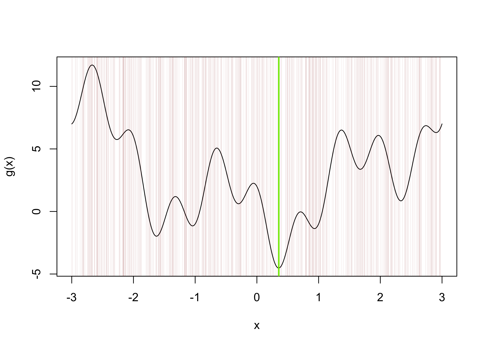
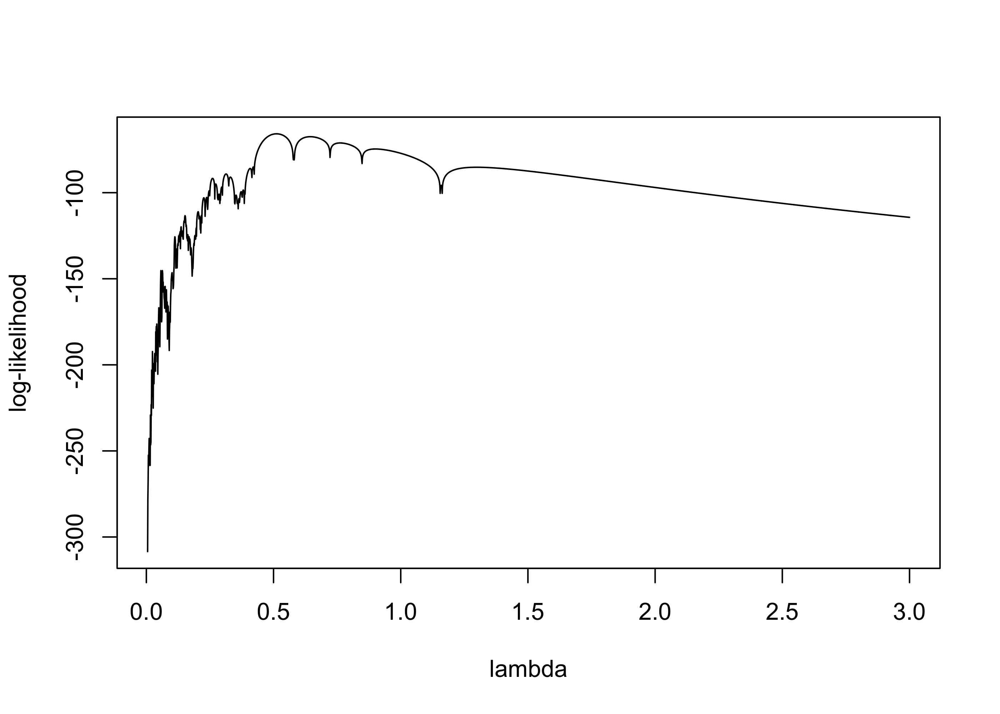
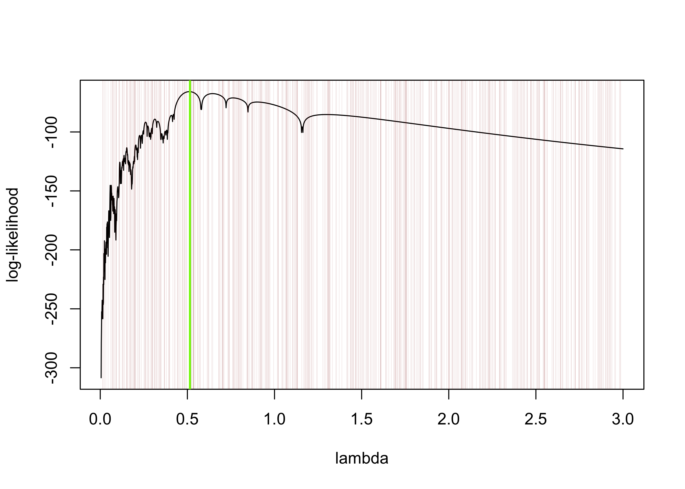
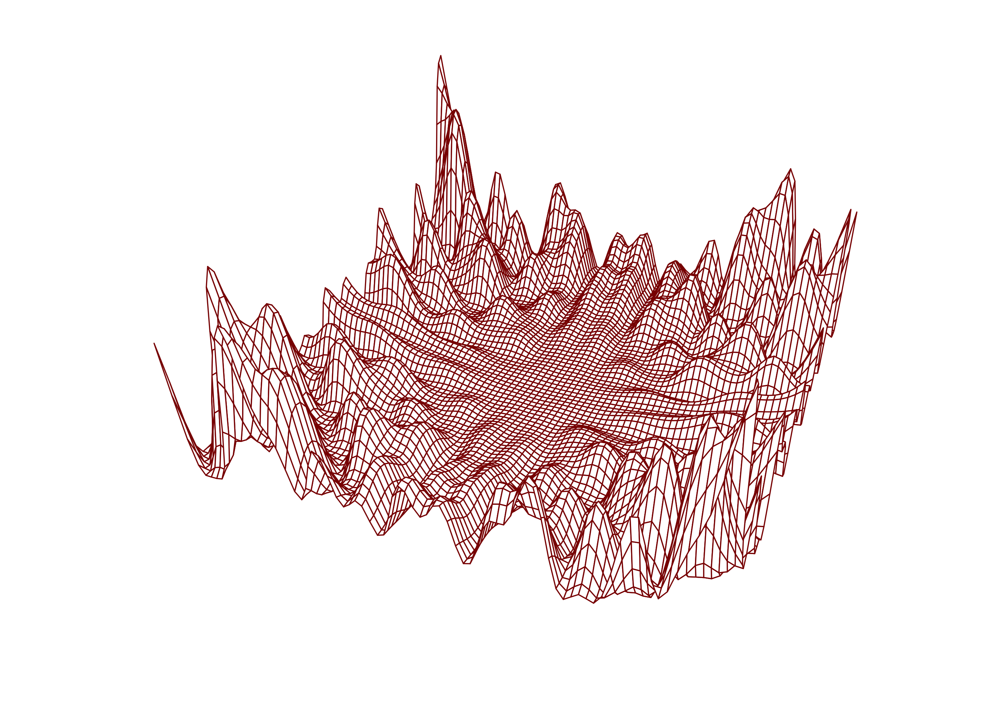
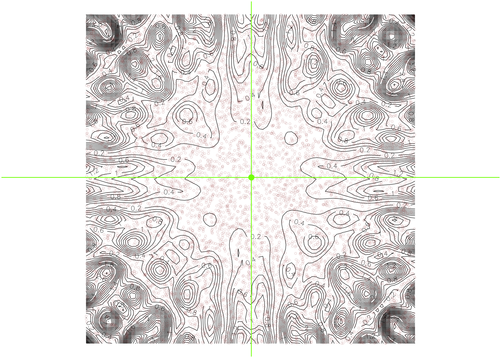
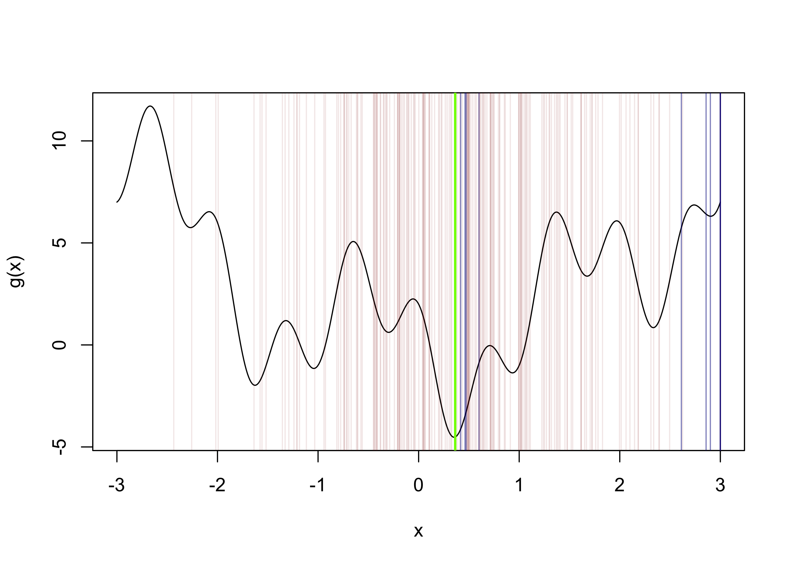
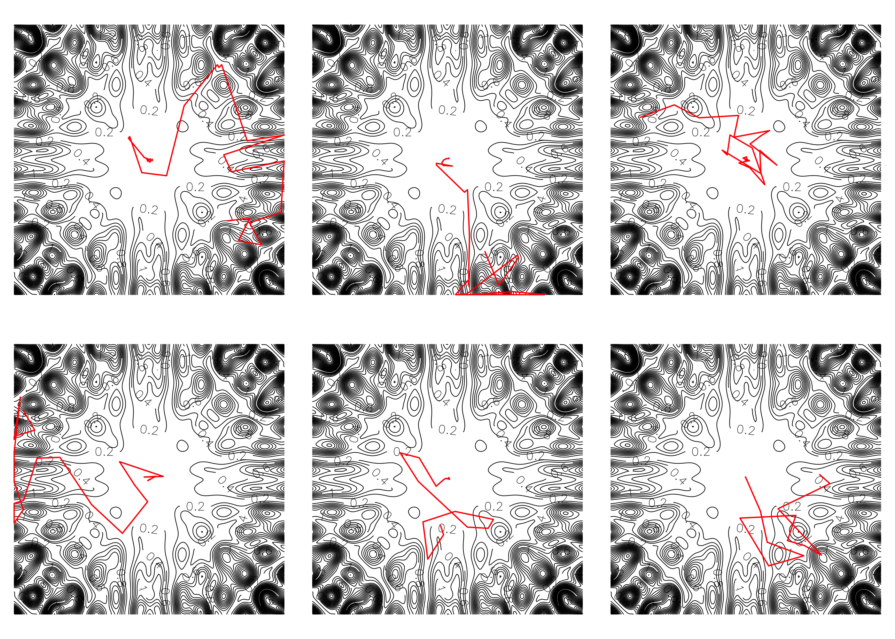

Now that we understand loops and can generate realizations of random variables in R, we can learn about Monte Carlo methods. These are methods which involve generating many random realizations of random variables in order to obtain approximations to quantities that are very difficult (or impossible) to compute exactly. Why are they called Monte Carlo methods? Well, Monte Carlo, in Monaco, was at one time a popular gambling destination, and as gambling typically involves random number generation, this name was given to methods which involved drawing many realizations of random variables. Keep in mind that Monte Carlo methods generally will not give exactly the same answer twice! However, we will find that if they are based on large enough samples of random variables, they can give reliable results.
In this note we will consider Monte Carlo methods for approximating the value of an integral and for approximating the minimizer (or maximizer) of a function.
Monte Carlo integral approximation
Suppose we want to integrate a function \(g\) over the interval \([a,b]\). That is, suppose we wish to compute \[
I = \int_a^bg(x)dx.
\] It may be that there is no nice anti-derivative of \(g\) that we can use to compute the integral exactly. In this case, we can approximate the integral using a Monte Carlo approach.
Hit-or-miss
One Monte Carlo approach is the so-called hit-or-miss approach. It goes like this: Given a value \(c\) such that \(g(x) \leq c\) for all \(x \in [a,b]\), choose some large \(N\) and generate independent realizations \[
\begin{align}
X_1,\dots,X_N &\sim \text{Uniform}(a,b)\\
Y_1,\dots,Y_N &\sim \text{Uniform}(0,c).
\end{align}
\] Then approximate \(I\) as \[
I \approx \frac{c(n-a)}{N}\sum_{i=1}^N\mathbb{I}(Y_i \leq g(X_i)),
\] where \(\mathbb{I}(\cdot)\) is an indicator function (so we count how many times we have \(Y_i \leq g(X_i)\)).
Example
Suppose we wish to integrate the function \[
g(x) = -\frac{2x\log(x)}{\log(x + 2)}
\] over the interval \([0,1]\). The R code below obtains an approximation using the Monte Carlo hit-or-miss method:
Wolfram Alpha gives the approximation \(0.568501\) to this integral. From the picture above, we see that all we are doing is approximating the proportion of the rectangular area \([a,b]\times[0,c]\) covered by the function and then scaling this by the total area \(c(b-a)\).
Classical
Note that we can write \[
I = \int_a^b g(x)dx = (b-a)\int_a^bg(x)\frac{1}{b-a}dx =(b-a)\mathbb{E}g(U),
\] where \(U\) is a random variable having the \(\text{Uniform}(a,b)\) distribution (since this has pdf equal to \(1/(b-a)\) on the interval \([a,b]\)). Now, by a result in mathematical statistics called the Strong Law of Large Numbers, the mean of a random sample can be made arbitrarily close to its expected value if a large enough sample is drawn. So the classical Monte Carlo approach to approximating this integral is this: For some large \(N\), generate \(U_1,\dots,U_N\) independently from the \(\text{Uniform}(a,b)\) distribution. Then approximate the integral as \[
I \approx (b-a)\frac{1}{N}\sum_{i=1}^N g(U_i).
\]
Example
For the same integral as in the hit-or-miss example, we have:
Suppose we wish to find the value of \(x\) which minimizes a function \(g\) over an interval \([a,b]\). That is, we wish to find \[
x = \underset{t \in [a,b]}{\operatorname{argmin}} ~g(t).
\] Sometimes it is not possible to use standard calculus methods for finding the minimizer of a function, as the function may not be differentiable or may have many local minima. When we are speaking of minimizing or maximizing a function, this function is often referred to as the objective function, so we will use this term.
Uniform sampling
The most basic Monte Carlo method for seeking the minimizer of an objective function \(g\) over an interval \([a,b]\) is as follows: For some large \(N\), generate \(U_1,\dots,U_N\) independently from the \(\text{Uniform}(a,b)\) distribution and then use the approximation \[
x \approx U_j, \quad \text{ where} \quad j = \underset{k \in \{1,\dots,N\}}{\operatorname{argmin}}g(U_k).
\]
Example 1
Let’s say we want to find the minimizer of the function \[
g(x) = x^2 - 3\sin(\pi x) + 2\cos(3\pi x)
\] over the interval \([-3,3]\). The R code below finds an approximation with the uniform sampling approach:
g <-function(x) x^2-3*sin(x*pi) +2*cos(x*3*pi)a <--3b <-3N <-500U <-runif(N,a,b)x0 <- U[which.min(g(U))] # which.min is a handy function!x <-seq(-3,3,length=500)plot(g(x)~x,type ="l")abline(v = x0,col="chartreuse",lwd =2)abline(v = U, col =rgb(0.545,0,0,0.1),lwd = .5)

Example 2
Suppose we observe a random sample \(X_1,\dots,X_n\) from a distribution with probability density function given by \[
f(x) = \left\{\begin{array}{ll}
\dfrac{1}{\pi\lambda},& x = 0 \\
\dfrac{\lambda}{\pi}\dfrac{\sin^2(x/\lambda)}{x^2}, &x\neq 0,
\end{array}\right.
\]
where \(\lambda > 0\) is a parameter whose value is unknown. The density looks like this:
assuming we do not observe any \(X_1,\dots,X_n\) exactly equal to zero. This function, for one particular sample of data, looks like this:
# define the log-likelihood function for the parameter lambda based on sample data in Xll <-function(lam,X) sum(log(f(X,lam)))# values below generated with lambda = 1/2X <-scan(text="-0.50101 -2.269045 -0.04700094 2.663053 0.4210084 1.303026 -0.6850137 -1.091022 0.2690054 -3.629073 -0.5670113 0.03300066 0.6730135 0.6190124 1.151023 -0.2970059 -0.05100102 0.50101 -0.4130083 0.05300106 0.7590152 -0.5790116 0.5730115 -0.5650113 0.2370047 -0.08900178 -0.3210064 -0.9390188 -0.4890098 -1.095022 -0.2810056 0.7830157 1.123022 -0.2670053 -0.3190064 0.1670033 -0.2610052 -1.01702 0.8810176 3.653073 0.8450169 1.183024 0.2370047 -0.01100022 -0.03300066 0.6730135 -0.1390028 -0.1090022 -0.08900178 0.2970059")lamseq <-seq(.005,3,by=0.001)ll_lamseq <-numeric(length(lamseq))for(i in1:length(lamseq)) ll_lamseq[i] <-ll(lam = lamseq[i],X)plot(ll_lamseq~lamseq,type ="l",ylab="log-likelihood",xlab ="lambda")

a <-0.01b <-3N <-500U <-runif(N,a,b)ll_U <-numeric(N)for(i in1:N) ll_U[i] <-ll(U[i],X)x0 <- U[which.max(ll_U)] # which.max is great too :)plot(ll_lamseq~lamseq,type ="l",xlab ="lambda",ylab ="log-likelihood")abline(v = x0,col="chartreuse",lwd =2)abline(v = U, col =rgb(0.545,0,0,0.1),lwd = .5)

Uniform sampling in the bivariate case
Suppose we have a bivariate function \(g(t_1,t_2)\) of which we would like to find the minimizer over the rectangle \([a_1,b_1]\times[a_2,b_2]\) of input values; that is, we would like to find the values \[
(x,y) = \underset{(t_1,t_2) \in [a_1,b_1]\times[a_2,b_2]}{\operatorname{argmin}} g(t_1,t_2).
\] The uniform sampling method in the bivariate case prescribes drawing, for some large \(N\), independent random realizations \(X_1,\dots,X_N \sim \text{Uniform}(a_1,b_1)\) and \(Y_1,\dots,Y_N \sim\text{Uniform}(a_2,b_2)\) and setting \[
(x,y) = (X_j,Y_j), \quad \text{ where }\quad j = \underset{k \in \{1,\dots,N\}}{\operatorname{argmin}}~ g(X_k,Y_k).
\]
Example
Consider minimizing the bivariate function \[
\begin{align}
h(x,y) = &~(x \sin(20y) + y(\sin(20x))^2 \cosh(\sin(10x)x) \\
&~ + (x\cos(10y) - y\sin(10x))^2\cosh(\cos(20y)y) \\
&~ + \sqrt{(x^2 + y^2)}/10
\end{align}
\] over the rectangle \([-1,1]\times[-1,1]\). We know that the function is minimized at \((x,y) = (0,0)\), but suppose we did not know this.
g <-function(x,y){ a <- (x*sin(20*y) + y*sin(20*x))^2*cosh(sin(10*x)*x) b <- (x*cos(10*y) - y*cos(10*x))^2*cosh(cos(20*y)*y) c <-sqrt(x**2+ y**2)/10 val <- a + b + creturn(val) }x <-seq(-1,1,length=81)y <- xz <-outer(x,y,FUN=g)par(mar=c(1.1,1.1,1.1,1.1))persp(x,y,z, theta =24, phi =30,cex.axis =0.8,expand =0.5,border =rgb(.545,0,0),box = F,lwd = .8)

Here we carry out the uniform sampling method for approximating the minimizer:
N <-10000X <-runif(N,-1,1)Y <-runif(N,-1,1)gXY <-numeric(N)for(i in1:N) gXY[i] <-g(X[i],Y[i])j <-which.min(gXY)xy <-c(X[j],Y[j])par(mar=c(.1,.1,.1,.1))contour(x,y,z,nlevels=50,lwd = .5,bty="n",xaxt="n",yaxt="n",asp=1)points(X,Y,col =rgb(0.545,0,0,.1),cex = .4)points(x=xy[1],y=xy[2],col ="chartreuse",pch =19)abline(v = xy[1], col ="chartreuse")abline(h = xy[2], col ="chartreuse")

When searching for the minimizer in a two-dimensional space, we need to generate a much larger number of points to obtain an accurate approximation. In spaces with dimension higher than two, the number of samples needed becomes so large that this method takes too much computational time to be practical.
Simulated annealing is an alternative to uniform sampling which is designed to seek the minimizer in a more computationally efficient way.
Simulated Annealing (Optional)
The word annealing is used for the heating a cooling of a metal. Simulated annealing refers to a Monte Carlo method for finding the minimizer of a function which is more carefully constructed than the uniform sampling approach. It goes like this:
To find the minimizer of a objective function \(g\), choose an initial guess \(x_0\), an initial temperature\(T_0\), a step size\(\sigma\), and a number of iterations \(n\). Then do the following for \(i=1,\dots,n\):
Propose a new value \(x^* = x_{i-1} + \sigma \varepsilon\), where \(\varepsilon\) represents a perturbation with, say, unit variance.
Compute \(d = g(x^*) - g(x_{i-1})\). Then, if \(d \leq 0\) set \(x_i = x^*\) (this means that if the proposed value decreases the function we will keep it). On the other hand, if \(d > 0\), set \(x_i\) equal to \(x^*\) with probability \(\exp(-d/T_{i-1})\) and equal to \(x_{i-1}\) with probability \(1 - \exp(-d/T_{i-1})\) (this means that even if the proposed value does not decrease the function but rather increases it, we may still keep it, but it is unlikely that we will keep it if the increase was large).
Update the temperature by setting \(T_i = T_{i-1} / \log(i+1)\).
The temperatures \(T_i\) decrease across the iterations, so as the algorithm proceeds, it becomes less and less likely to accept proposals which do not decrease the objective function.
In Step 1. one option for \(\varepsilon\) is to generate it from the standard Normal distribution. Note that this algorithm can also work when \(g\) takes vector-valued arguments, so we may be searching for the minimizer in a space with dimension greater than 1.
In Step 2. we can do an action “with probability” something by generating \(U \sim \text{Uniform}(0,1)\) and doing the action if \(U\) is less than something.
In Step 3., one may update the temperatures according to some other rule—the point being that the temperatures should decrease, so in the latter iterations one insists more strongly that the objective function should not increase.
Example 1
The R code below defines a function which performs simulated annealing to search for the minimizer of a function \(g\) over an interval \([a,b]\). Then simulated annealing is demonstrated for the same minimization as in Example 1 in the uniform sampling section.
Note that the function defined below is a function which take as one of its arguments another function. This is something new for us. The ... which appears in the list of arguments in the function definition stands in for any arguments which may need to be passed along to the function put in for f. We will make use of the ... in the next example.
simann <-function(g,a,b,tmp,st,iter,...){ x0 <-runif(1,a,b) vals <-numeric(iter) keep <-logical(iter)for(i in1:iter){ x1 <- x0 + st *rnorm(1) # generate candidate next value x1 <- a*(x1 < a) + b*(x1 > b) + x1*((x1 >= a) & (x1 <= b)) # keep value of x1 inside interval (a,b) g0 <-g(x0,...) g1 <-g(x1,...) d <- g1 - g0 tmp <- tmp /log(i+1) ap <-exp(-d / tmp)if(runif(1) < ap){# always true when d <= 0 (function decreased) x0 <- x1 keep[i] <- T } vals[i] <- x1 } output <-list(x = x0,vals = vals,keep = keep)}g <-function(x) x^2-3*sin(x*pi) +2*cos(x*3*pi)simann_out <-simann(g,a=-3,b=3,tmp=100,st=1,iter=200)# make a plotx <-seq(-3,3,length=500)plot(g(x)~x,type ="l")abline(v = simann_out$vals, col =ifelse(simann_out$keep,rgb(0,0,.545,.5),rgb(0.545,0,0,.1)))abline(v = simann_out$x,col="chartreuse",lwd =2)

Example 2
Simulated annealing possesses a greater advantage over uniform sampling in higher dimensional settings. The code below defines a function for performing simulated annealing over a rectangle in \(\mathbb{R}^2\). The code is nearly the same as in the univariate case.
The code below runs the bivariate simulated annealing function several times to seek the minimizer of the bivariate function in Example 3 in the uniform sampling section. The initial value is randomly selected each time.
g <-function(x,y){ a <- (x*sin(20*y) + y*sin(20*x))^2*cosh(sin(10*x)*x) b <- (x*cos(10*y) - y*cos(10*x))^2*cosh(cos(20*y)*y) c <-sqrt(x**2+ y**2)/10 val <- a + b +creturn(val) }x <-seq(-1,1,length=201)y <- xz <-outer(x,y,FUN=g)# here define a version of the function which takes a vector-valued argumentg2 <-function(x) g(x[1],x[2])par(mfrow=c(2,3),mar=c(.2,.2,.2,.2))for(i in1:6){ simann_biv_out <-simann_biv(g2,a=c(-1,-1),b=c(1,1),tmp=100,st=0.2,iter=1000)contour(x,y,z,asp=1,nlevels=50,bty ="n",xaxt="n",yaxt="n",lwd = .5)lines(x=simann_biv_out$vals[,1],y=simann_biv_out$vals[,2],col ="red")}

We see from the output that simulated annealing required, in the end, less total computation, as one does not need to generate uniform realizations across the entire domain of the function.
Practice
Practice writing code and anticipating the output of code with the following exercises.
Write code
Write R code to approximate the integral \[
I = \int_1^3 \frac{\sin((x-1) \pi/2)}{\sqrt{x}} dx
\] with the Monte Carlo hit-or-miss method.
Write R code to approximate the integral \[
I = \int_0^3 \frac{1}{1 + x^2 + x^4}dx
\] with the classical Monte Carlo method.
Write R code to obtain an approximation to the maximizer of the function \[
\psi(x) = e^{-x^2/2}\cos(5x)
\] using the uniform sampling Monte Carlo method.
Write R code to obtain an approximation to the minimizer of the bivariate function \[
g(x,y) = \frac{1}{\pi \sigma^4}\Big(\frac{x^2 + y^2}{2 \sigma^2} - 1\Big)\exp\Big(-\frac{x^2 + y ^2}{2\sigma^2}\Big)
\] using the uniform sampling Monte Carlo method. Choose any value of \(\sigma > 0\). The function looks like this: